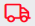

Using the Immediate Needs Insight Screen
You can use the Immediate Needs Insight Screen to address the inbound, inventory, and outbound processes
to fulfill the immediate needs of your warehouse. When the system creates an immediate needs request, you can view these records in the Immediate Needs Insight. This screen allows you to search for immediate needs requests using several search criteria fields. Once you fulfill an immediate need, the system will automatically close and delete the immediate needs request from the record list. The system uses several icons to represent the status of immediate needs requests in the insight screen.
There are two main components
of the immediate needs process:
- Logging of an immediate needs request
- Fulfillment of that immediate need
Logging involves the system
generating an immediate needs request to indicate that an entity (shipment,
work order, replenishment, or short-picked shipment) cannot be completely
fulfilled. The fulfillment process involves the system taking newly-received
item quantity and automatically allocating this quantity to fulfill the
immediate need. Users can view a list of the current immediate needs requests
and their statuses on the Immediate Needs Insight Screen.
Notes
Related Topics...
Immediate Needs Process Summary: Functionality
Immediate Needs Process Summary: Process Flows
Immediate Needs Note Field
Immediate Needs Setup Overview
Immediate Needs Request Created Field
Immediate Needs Resource Key Field
Introduction to Insight Screens
Researching a Warehouse's Immediate Needs
Using the Receipt Container Insight Screen
Using the Work Order Insight Screen
Using the Work Order Line Insight Screen
The following is discussed in this topic:
Searching/Viewing Immediate Needs Records
About the List Pane
About the Detail Pane
Screen Actions
Searching/Viewing Immediate Needs Records
You can use the Immediate Needs Insight Screen to search for and view immediate needs for records in your warehouse.
- Open the Immediate Needs Insight Screen.
- Use the Basic Criteria Fields (located on the Filter Pane) to indicate the values for your primary search.
- Press the Search Button. The system will display the resulting records in the List Pane.
- If you select one of the result records from the List Pane, then the system will display its information in the Detail Pane.
About the List Pane
The Immediate Needs Insight Screen's List Pane displays the results from a query performed in the Filter Pane.
List Pane Icon Explanation
Certain conditions for the immediate needs are represented by graphical icons on the list pane. Below are explanations of what each icon represents:
| Icon |
Explanation |
|

|
Immediate need is associated with a
shipment allocation request.
|
|
|
Immediate need was triggered by a
short pick.
|
|
|
Immediate need is associated with a
work order allocation request.
|
|
|
Immediate need is associated with a
replenishment allocation request.
|
For more general information about the List Pane, see the topic Introduction to Insight Screens.
About the Details Pane
The Shipment Insight Screen's Detail Pane displays the specific field values associated with a selected record in the List Pane.
For more general information about the Detail Pane, see the topic Introduction to Insight Screens.
Screen Actions
The following actions are accessible from the List Pane:
Edit
This action allows you to edit an immediate needs request for an item. Clicking on this action opens Immediate Needs Details Screen and after modifying the required value, click Save to incorporate the changes.
Delete
This action allows you to delete an immediate needs request for an item. A success message is shown when the deletion happens and a failure message appears if the immediate need does not exist for the item.
Change Priority
This action allows you to change the priority of an immediate needs request or multiple requests from immediate needs insight. The system will display a dialog where you can enter a new priority value. A success message is shown when the priority gets saved and a failure message appears when the immediate need does not exist for the item. The value of the priority should be greater than or equal to zero and less than or equal to 999.